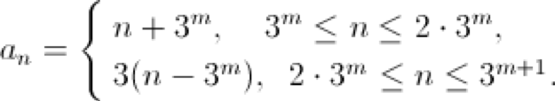

$a_1$, $a_2$, $a_3$, ... is an increasing sequence of natural numbers. It is known that $a_a_k$ = 3k for any k. Find a$)$ $a_100$; b$)$ $a_1983$.
a$)$ We note immediately that the sequence $a_k$ is strictly increasing. Indeed, the assumption $a_k$ = $a_{k + 1}$ = n immediately leads to a contradiction: $a_n$ = 3k = 3 $(k + 1)$. In addition, $a_1$ $>$ 1 $($otherwise $a_a_1$ = $a_1$ = 1 ≠ 3$)$. It follows that $a_k$ $>$ k for all k. On the other hand, $a_1$ $<$ $a_a_1$ = 3. Therefore, $a_1$ = 2, $a_2$ = 3, $a_3$ = 6, $a_6$ = 9, $a_9$ = 18, $a_18$ = 27, $a_27$ = 54, $a_54$ = 81, $a_81$ = 162, $a_162$ = 243 And since 162 - 81 = 243 - 162, then $a_k$ = 81 + k for all k from 81 to 162. In particular, $a_100$ = 181.
b$)$ $a_162$ = 243, $a_243$ = 486, $a_486$ = 729. Since 729-486 = 486 - 243, then $a_k$ = 243 + k for all k from 243 to 486. In particular, $a_418$ = 661, which means that $a_661$ = 1254, $a_1254$ = 1983, $a_1983$ = 3762.
a$)$ 181; b$)$ 3762.
1. Similarly, we can obtain the general formula: 
2. In classes 7 and 8, only part a$)$ was offered $($12 points$)$, in classes 9 and 10 only part b$)$ was offered $($8 points$)$.